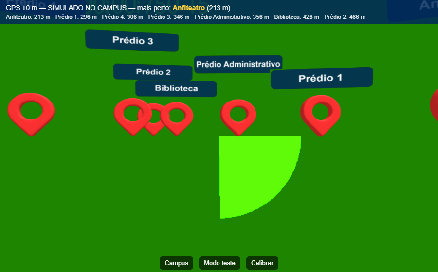

Centro Universitário Anchieta — Ciência da Computação
Localização dos prédios do campus Prof. Pedro C. Fornari
Prof. Clayton Valdo
| Integrante | RA |
|---|---|
| Mateus Tavares Ruiz | 2300567c |
Projeto: https://github.com/mateustavaresruiz/atividade03-ra-campus
App: https://mateustavaresruiz.github.io/atividade03-ra-campus/
Novembro de 2026
App de Realidade Aumentada markerless (sem marcador impresso): pela câmera do celular, mostra um marcador 3D (pino vermelho) sobre cada prédio do campus e o nome do prédio logo acima. A posição de cada prédio vem do GPS e a direção para onde o celular aponta vem da bússola e do giroscópio. É a chamada RA baseada em localização (location-based AR).
| Tecnologia | Papel no projeto |
|---|---|
| HTML + JavaScript | App web: roda no navegador do celular, sem instalar nada |
| A-Frame 1.3.0 | Framework de cenas 3D na web (baseado em three.js). A cena é escrita com tags HTML (<a-scene>, <a-camera>, <a-entity>) |
| AR.js 3.4.5 | Biblioteca de RA. Usamos o módulo de localização: gps-new-camera (câmera guiada pelo GPS e pelos sensores) e gps-new-entity-place (objeto fixado numa latitude/longitude) |
| three.js FBXLoader | Carrega o modelo map_pin.fbx fornecido na atividade |
| Geolocation API | GPS do navegador (precisão e calibração) |
| OpenStreetMap | Fonte das coordenadas iniciais dos prédios |
| GitHub + GitHub Pages | Código na nuvem e hospedagem HTTPS (câmera e GPS exigem HTTPS) |
atividade03-ra-campus/ ├── index.html página do app: cena A-Frame/AR.js e painel ├── componentes.js componentes A-Frame criados para o projeto ├── pontos.js lista dos prédios (nome, latitude, longitude) e distância ├── calibrar.html página para ajustar as coordenadas no campus ├── modelos/ │ └── map_pin.fbx marcador 3D fornecido pelo professor └── README.md instruções
abre o link → permite câmera, GPS e sensores → AR.js liga a câmera (vídeo ao fundo) e o GPS → 1ª posição do GPS: o app cria um ponto 3D para cada prédio → cada ponto = pino FBX + rótulo com o nome, na latitude/longitude do prédio → a bússola/giroscópio giram a câmera virtual junto com o celular → a cada nova posição: recalcula distâncias, escala e o painel
<a-scene arjs="sourceType: webcam; videoTexture: false">: o AR.js mostra a câmera traseira atrás da cena 3D (o canvas é transparente, alpha: true). Nos testes, videoTexture: true desenhava o vídeo por cima dos objetos, por isso foi desligado.<a-camera gps-new-camera="gpsMinDistance: 3">: câmera virtual que se move com o GPS (só atualiza se andar 3 m ou mais, para evitar tremedeira) e gira com os sensores do celular.gerenciador-pontos na cena, painel no topo (precisão, prédio mais perto, distâncias) e atalhos para os modos.PONTOS: lista dos 7 pontos — Prédios 1 a 4, Biblioteca, Prédio Administrativo e Anfiteatro — com o centro de cada prédio no OpenStreetMap.carregarPontos(): usa as coordenadas calibradas no celular (localStorage), se existirem; senão, as do arquivo.distanciaMetros(): fórmula de Haversine, distância em metros entre duas coordenadas.| Ponto | Latitude | Longitude |
|---|---|---|
| Prédio 1 | -23.214412 | -46.891534 |
| Prédio 2 | -23.212863 | -46.892935 |
| Prédio 3 | -23.213953 | -46.892904 |
| Prédio 4 | -23.214494 | -46.893442 |
| Biblioteca | -23.213193 | -46.892648 |
| Prédio Administrativo | -23.213798 | -46.892063 |
| Anfiteatro | -23.215327 | -46.891176 |
Distância mínima entre pontos: todos os pares ficam a mais de 50 m, exceto Prédio 2 e Biblioteca (47 m, prédios vizinhos). A página de calibração avisa quando algum par fica abaixo de 50 m.
Carrega o map_pin.fbx uma única vez com o THREE.FBXLoader, normaliza o tamanho
(altura 1, base no chão), aplica material vermelho e coloca uma cópia em cada ponto. O pino gira
devagar para chamar atenção. Se o FBX não carregar, usa um cone vermelho no lugar.
Desenha o nome do prédio num canvas (para aceitar acentos, como em "Prédio") e usa como
textura de um plano. A cada quadro o plano gira para ficar de frente para a câmera (billboard).
gps-camera-update-position do AR.js.gps-new-entity-place (latitude/longitude), o pino e o rótulo logo acima. Os rótulos têm alturas alternadas para que nomes de prédios na mesma direção não se cubram.?teste=1): espalha os pontos em círculo a 60–120 m de onde a pessoa está, para testar fora do campus.?simular=1): usa a simulação de GPS do AR.js e coloca o usuário no campo de futebol do campus, olhando para os prédios.Mostra a posição atual e a precisão do GPS. Em frente a cada prédio, o botão "Salvar aqui" grava
a coordenada no celular; o app passa a usá-la. Também mostra a distância até cada ponto, avisa pares
com menos de 50 m e exibe o código de PONTOS pronto para copiar para o pontos.js.
| Teste | Resultado |
|---|---|
| Modelo FBX e rótulos numa cena 3D simples | Pino vermelho renderizado; acentos corretos |
| App no computador, modo simulado (câmera falsa do navegador) | 7 pontos criados nas posições corretas, pinos e nomes sobre o vídeo, painel com distâncias |
| Versão publicada no GitHub Pages | Página e modelo acessíveis por HTTPS |

Modelo map_pin.fbx: material da atividade. Coordenadas: © colaboradores do OpenStreetMap (ODbL).